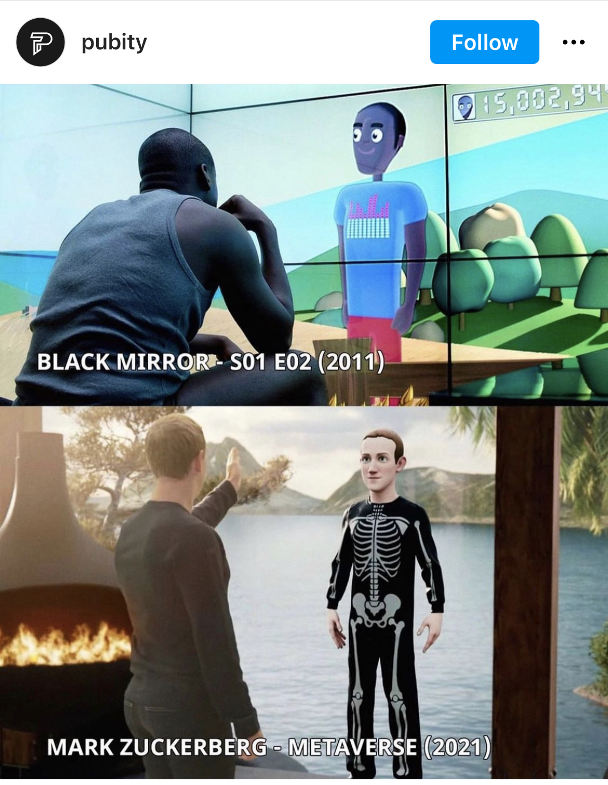

Repressive Robots?
Chinese Perspectives on AI
Jennifer Cheung
December 30, 2021 | Word count:828

When I was younger, I had a genuine – but also slightly provocative – curiosity about the life of my friends in the mainland. As a young teenager, my questions mostly revolved around the Internet: why didn’t they have Facebook? Why did they need their
own platforms and search engines? But I was also curious about touchier subjects, like June Fourth. I wanted to point out our differences— or, if I’m being honest, what they didn’t know that I did. These questions reinforced an ‘us and them’
mentality that is common amongst Hong Kongers; a distinction between freedom and repression, and a sense of superiority.
My curiosities in the field of AI are not dissimilar. Public discourse and perceptions of AI are
well-documented in the West: in their 2019 paper, “Scary Robots”, Cave et al. find that British respondents are more concerned than excited about AI, particularly in regard to the obsolescence and alienation of humans.[1] But we don’t really
need surveys to tell us this: figures like Zuckerberg and Bezos are constantly mocked on Western social media, and there are countless dystopian sci-fi shows and movies that influence the way we see AI.
On the other hand, there
is a common narrative that Chinese people don’t feel the same way; that they are less concerned about the ethics and more excited about the opportunities of AI.[2] Indeed, in an analysis of WeChat posts, Zeng et al. find that discussions on
AI are often dominated by an economic frame (topics include stocks, the Chinese and US tech industry, fintech, etc.), followed by scientific and technical framings of AI.[3] Interestingly, they find that socio-ethical concerns are paid the
least attention, and have even declined in the last four years.
In comparison to the West, there isn’t nearly as much attention on algorithmic discrimination— with the exception of ‘big data swindling’ (using Big Data to manipulate
pricing).[4] In fact, many examples of problematic AI are derived from the West: in an analysis of WeChat and Zhihu, Mao and Shi-Kupfer find that AI ethics discussions reference case studies like Amazon’s discriminatory hiring practices, Microsoft’s
Tay, etc.[5] Even discussions on long-termism are drawn from Western fictions such as the Matrix and Black Mirror.
From these studies, one might think that Chinese people are not as concerned about the ethics of AI. But I think
that is misleading. For one, social media in mainland China is not quite a reliable source for analysing popular perceptions and discourse on AI. Secondly, I believe that Chinese people’s concerns on AI are qualitatively different to that
of the West. It may just be that the experiences of the West suck up most of the oxygen in this space.
For example, Chinese people are aware of the ethical issues of surveillance: a recent survey published by Chinese-language news
website Beijing News Think Tank finds that of the 1,515 anonymous respondents, 87% were opposed to facial recognition technology.[6] In fact, in October 2020, a video of a man wearing a full-face motorcycle helmet in an effort to evade surveillance
cameras went viral.[7] The facial recognition cameras, installed by real estate firms, led to public outcry and cities like Nanjing and Xuzhou ended up banning local developers and housing agencies from using such technology.[8]
These are just some of the ways the government is now responding to popular fears about privacy and facial recognition, a concern that has grown significantly in 2020. Here is the dichotomy of AI ethics in China: whilst there is certainly
a form of techlash, government use of AI is generally accepted. It has to be, as the government is the primary authority by which tech firms can be reined in.
And I don’t think this is necessarily a bad thing. In Cave et al.’s 2019
survey, there was an air of hopelessness: respondents felt that they had little control over the development of AI; their voices overshadowed by the power of corporations and governments. This exasperation is magnified by recent tech scandals
and popular fiction, marred by distinctly American politics. Whilst the West is struggling to figure out what to do with Meta and Amazon, China doesn’t have these same problems.

In this way, it’s perhaps better to see AI as a tool; a neutral instrument that isn’t inherently good or bad. This sense of personal responsibility also echoes Daoist philosophy: that the world is constantly changing, and in this sense, humans have to continuously learn, adapt, and manage these technologies (Mao & Shi-Kupfer, 2021). It’s compelling to think in this way, especially at a time where Big Tech seems to be omniscient and Western governments seem to be useless, behind, or even complicit. Rather than dismiss the Chinese as techno-optimists that don’t engage with AI and ethics, it might also be worth acknowledging that the West’s approach to AI ethics can itself be a double-edged sword.